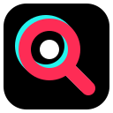

Riset KOL TikTok
Masih cek ER KOL
manual?
Buka video satu per satu
Catat views, likes, komentar
Hitung ER di kalkulator
Ulangi untuk KOL berikutnya…
Lama, dan
rawan salah hitung.

Pantaw
1 / 3
Solusinya
Kartu ER muncul
langsung
di profil TikTok
Views
Likes
Komentar
ER
Contoh · @tiktok
Pantaw
2 / 3
Pantaw
Extension Chrome
gratis
Data dihitung lokal di browser
Tanpa login, tanpa akun
Salin ke spreadsheet, 1 klik
Segera di Chrome Web Store
DM untuk file mentahnya
Versi beta, sebelum listing tayang
Tidak berafiliasi dengan TikTok.